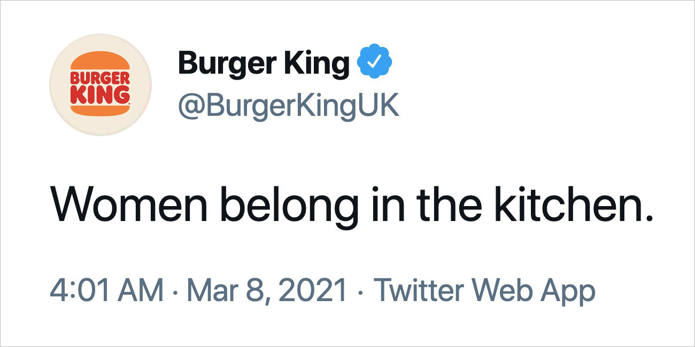

Beispiele
Wir sehen jeden Tag Werbung. Sei es auf Social Media, im Fernseher oder sogar auf Plakaten. Einige davon bleiben uns mehr, andere weniger im Gedächtnis. Hier befinden sich einige Beispiele für einprägsame Werbungen, die das Marketing Best Practices für Werbungen perfekt umgesetzt haben.
Mobiliar mit Humor
Zielgruppen Ansprache
Die Zielgruppe der Mobiliar sind Erwachsene in allen möglichen Alterskategorien, weil diese Personen sich um ihre Versicherungen kümmern müssen und oft schon Eigentum haben. Noch spezifischer sind es eher ältere Erwachsene, da diese oft mehr Vermögen haben und somit oft auch mehr versichern lassen. Bei dieser Werbung nicht besonders angesprochen, aber auch eine attraktive Zielgruppe sind Menschen in Übergangsphasen im Leben, z.B. wenn man Kinder bekommt, gerade Erwachsen wird, sich dem Ruhestand nähert. Das, weil es Phasen sind, in denen man sich zum ersten Mal mit der Versicherung auseinandersetzen muss und oft eben offen gegenüber einer neuen Versicherung ist.
Kreativität und Originalität
Das Steckenpferd einer jeder Mobiliar-Werbung ist die Kreativität und Originalität. Das oft verwendete Strichmännli kommt hier zwar nicht zum Einsatz, allerdings gestaltet man die Werbung trotzdem humorvoll. Wie aus dem Interview bekannt sind es oft reale Schadensfälle, welche es als Werbung schaffen, was bei dieser auch durchaus vorstellbar ist. Die Werbung trifft den Humor vieler Personen. Kreativ ist sie, insofern dass man wahrscheinlich nie ohne irgendetwas auf diese Idee kommen würde, allerdings durch die vielen Schadenfälle, welche die Mobiliar eben mitbekommt, entsteht der grosse Pool an lustigen Fällen. Die Sprache ist auch Mobiliar typisch sehr bewusst und einfach gewählt und es wird nicht mehr gesagt als wirklich nötig.
Wirkung
Die Werbung wirkt lustig und zeigt eben, wo die Mobiliar überall hilft. Man löst durch die Werbung ein gutes Gefühl bei den Kunden aus und verbindet dieses mit dem Unternehmen Mobiliar. Ausserdem zeigt die Mobiliar, dass sie die Menschlichkeit nicht verloren haben und auch bei Missgeschicken für den Kunden da sind. Dadurch wirken sie nahbar und freundlich. Das Image der Mobiliar welches dadurch entsteht, ist gar nicht Versicherungs-Ähnlich, sondern eher wie ein Freund, welcher für dich da ist und dich unterstützt. Der Kunde fühlt sich in sicheren, freundlichen und trotzdem seriösen Händen.
Virale Faktoren
Viele Werbungen der Mobiliar sind als Einzelne nicht besonders bekannt. Wenn man aber darüber spricht, haben viele Schweizer direkt ein Beispiel einer Werbung im Kopf, was das Ausmass an Bekanntheit und Kult dieser Werbungen unterstreicht. Die "Pointe" der Werbung ist jeweils ganz am Ende der Geschichte, was zu einer hohen durchschnittlichen "Watch-Time" führt und so die Werbung im Algorithmus gut bewertet.
Fazit
Die Mobiliar Werbung überzeugt durch ihren spannungsbogen und die gute Pointe. Besonders aber hat die Werbung den klassischen Mobiliar "Charme" und somit einen guten Wiedererkennungswert. Durch die Werbung entsteht ein lockeres aber trotzdem seriöses Image welches bei Kunden gut ankommt. Die Werbung ziemlich einfach gehalten und gut produziert, wodurch die Message einfach zugänglich ist.
Burger King Missverständnis
Zielgruppen Ansprache
Die Zielgruppe von Burger King sind mehrheitlich junge Menschen, aber auch zum Teil ältere Menschen oder Familien. Junge Menschen sind nicht nur Kunden sondern oft machen oft auch einen grossen Teil der Arbeiter aus. An solche potentiellen Arbeiter sollte diese Werbung auch gerichtet sein. Burger King wollte weibliche Köche mit dieser Werbung ansprechen und darauf aufmerksam machen, dass die Frauenquote in der Küche bei ihnen erstaunlich tief ist.
Kreativität und Originalität
Die Originalität dieser Werbung steckt im Witz mit alten Geschlechterrollen. Da man früher fast immer im Haushalt hat arbeiten lassen. Heutzutage gilt dieses Modell als veraltet und Frauen arbeiten ebenso am normalen Arbeitsmarkt wie Männer. Um darauf Aufmerksam zu machen, dass auch Frauen in der Burger King Küche arbeiten können, wurde dieser X Beitrag (damals noch Twitter) so veröffentlicht. Was noch dazu kommt ist, dass dieser Post am internationalen Frauentag so veröffentlicht wurde.
Wirkung
Auf die meisten Menschen welche den Post gesehen haben hat der Post zu verwirrung geführt, da man nicht verstanden hat was der Witz daran sein soll, da er auch nicht einfach zu verstehen ist ohne Kontext. Viele waren auch verärgert über den Humor und fanden den Witz unangebracht. Somit führe dieser Post zu vielen negativen Reaktionen. Besonders auch weil es der Frauentag war, hat man Burger King vorgeworfen sich lustig über diesen Tag zu machen.
Virale Faktoren
Da der Post zu sehr vielen interaktionen und aufschreienden Menschen geführt hat, ist es nur logisch das der Post Viral gegangen ist und so bekannt wurde. Der Beitrag hat oft starke Emotionen in Menschen ausgelöst, was eine der besten Faktoren ist für Werbungen. Allerdings hat dieser Post mehr negative als positive ausgelöst. Allerdings fanden den Post auch viele lustig und er ist gut angekommen. Trotzdem wurde der Post nach einiger Zeit gelöscht.
Kritik
Diese Werbung kann man auf der Ebene des Humors am besten Kritisieren, da es wirklich nicht den Humer vieler getroffen hat. Unerwartet waren die Reaktionen nicht und die Marketing Abteilung von Burger King wusste sicher dass es so kommen wird. Das Wissen darüber, dass man viele Menschen wütend machen wird und es trotzdem zu veröffentlichen kann man und wurde auch kritisiert.
Fazit
Die von Burger King am internationalen Frauentag veröffentlichte Werbung ist ein gutes Beispiel für unpassender Humor bei Werbungen. Die Werbung zielte zwar darauf ab die Frauenquote in den Küchen zu erhöhen, löste aber viele negative Reaktionen aus. Anstatt Gleichberechtigung zu fördern, gab es nun Vorwürfe sich über den Frauentag lustig zu machen, was schlussendlich auch zum löschen des Beitrags geführt hat. Für eine Werbung war die Message zu versteckt und viele verstanden den Witz nicht, die Werbung war also nicht einfach und zugänglich genug um von der breiten Masse als lustig wahrgenommen zu werden. Provokante Werbung ist sehr riskant und kommt nur selten gut an. Die Werbung erreichte zwar Viralität, das ganze aber auf Kosten von wütenden Kunden.
Migros Weihnachtswerbung
Zielgruppen Ansprache
Die Zielgruppe der Migros deckt alles mögliche ab. Von Jung bis Alt, ob alleine oder Familie. Die Migros will jeden ansprechen. Das Thema Liebe ist somit gut gewählt, da es eine Rolle in jedermanns Leben spielt. Besonders während der Feiertage will die Migros durch die Werbung alle daran erinnern, Zeit mit den Menschen zu verbringen welche einem am wichtigsten sind und den Fokus auf die Werte Familie, Liebe und Gemeinschaft richten. Die Sprache von Bild und Ton ist einfach und herzlich und somit Verständlich für alle. Die Szenen welche gewählt wurden sind alltäglich und somit ebenso greifbar für die Zielgruppe.
Kreativität und Originalität
Die Werbung wirbt nicht in klassischer Form für ein Produkt, sondern soll ein gutes Gefühl und Werte übermitteln, welches Kunden dann in Verbindung mit der Migros bringen. Allerdings ist der kleine Weihnachtswichtel Finn mittlerweile bekannt für die Migros und steht somit für die Migros, was den Wiedererkennungswert erhöht. Auch ist es typisch für die Migros jedes Jahr (nach paar Jahren unterbruch) eben eine solche emotionale Geschichte um Finn zu publizieren.
Wirkung
Die Werbung wirkt auf verschiedenen Ebenen, vor allem aber emotional. Durch die Verwendung von und allen bekannten Situationen kann sich auch jeder gut in die Werbung versetzten was die Wirkung eben verstärkt. Die bewusst gewählten Worte "Feiern wir unsere Liebsten" wirken so zum Schluss umso mehr. Im anfälligsten Moment für Emotionen wird dann langsam das Migros Logo eingeblendet, was uns eben diese Werte verknüpfen lässt.
Virale Faktoren
Die emotionale Aufladung motiviert zum teilen durch den "Tränenmoment-Effekt", was bei einigen Migros Weihnachtswerbungen bis zu 1.8 Millionen Aufrufen auf Youtube geführt hat. Auch auf Instagram und anderen Plattformen führte diese Werbung stets zu zahlreichen Interaktionen und positiven Reaktionen. Auch in den Medien gibt es immer wieder Berichte über diese "schöne" Werbung wie z.B: auf persoenlich.com, 20 Minuten, Srf und bei der NZZ.
Kritik
Auf manche Menschen wirkt die Werbung zu sentimental und somit gar abstossend. Ebenso kann die Werbung auf Menschen welche gerade erst schlechte Erlebnisse mit der Liebe gemacht haben negativ Wirken und sie wieder auf schlechte Gedanken bringen. Generell könnte man auch sagen, dass die Werbung nicht wirklich wirbt für ein Produkt weshalb sie nicht ideal ist. In dem Fall Migros hier, wird dies aber eine bewusste Entscheidung dagegen gewesen sein um den Hauptfokus auf der Liebe und der Nähe zu halten.
Fazit
Die Migros-Weihnachtskampagne «Finn entdeckt die Liebe» ist ein Paradebeispiel für gelungenes emotionales Storytelling, das tief in der Schweizer Kultur verankert ist. Durch die universelle Botschaft von Liebe, Familie und Gemeinschaft gelingt es der Migros, eine breite Zielgruppe anzusprechen. Die Wahl alltäglicher Szenen und die herzliche, unkomplizierte Bildsprache machen die Werbung greifbar und identifikationsstark. Der Wiedererkennungswert der Figur "Finn" stärkt zudem die Markenbindung und schafft eine jährlich wiederkehrende Tradition, auf die viele Schweizer emotional reagieren. Die Kampagne verbindet die Marke nicht nur mit positiven Emotionen, sondern festigt ihre Rolle als vertrauenswürdiger Begleiter im Alltag, was gerade zur Weihnachtszeit ein entscheidender Erfolgsfaktor ist.
Nestle Greenwashing
Zielgruppen Ansprache
Die Zielgruppe von Nestle ist sehr breit gefächert. Sie haben Produkte in allen Preisklassen in fast allen Ländern. Grundsätzlich also ist fast jeder Mensch der Welt irgendwo Nestle Kunde und beim normalen Einkaufen kommt man fast nicht drum herum etwas zu kaufen. Insbesondere aber bei Klimawandel-Interessierten Menschen steht Nestle in keinem guten Licht, weshalb die Zielgruppe für diese Werbung vor allem diesem betrifft. Allerdings gut angekommen ist die Werbung gar nicht und man kann schon von einem Schuss nach hinten reden. Man sprach die Zielgruppe zwar an, allerdings negativ und es gab viele negative Reaktionen, da Nestle in der Vergangenheit und bis Heute schon oft negativ aufgefallen war bezüglich Natur-/Umweltschutz und Menschenrechte.
Kreativität und Originalität
Diese Werbung zielt auch nicht klassischer Weise auf ein Produkt ab, sondern mehr auf die Marke Nestle und um deren Bemühungen um die Erde zu zeigen. Die Werbung ist kreativ gestaltet und zieht das Thema KI, Umwelt und Zukunft durch. Auch das die Bilder von KI generiert wurden wirkt originell, da dies auch offen klargestellt wird. Ebenso wird ein roter Faden durchgezogen und der Spannungsbogen ist gut gemacht, so dass man gerne bis zum Schluss zuhört.
Wirkung
Durch eine gut produzierte Werbung, spannende Musik und einen guten Ablauf wirkt die Werbung spannend und vor allem Visionär. Sie trifft den Zeitgeist und weckt viele Reaktionen, jedoch sind diese oft Negativ. Das Unternehmen will ihre Bemühungen offenlegen und das Markenimage verbessern. Nestle provozierte viele emotionale Reaktionen, aber eben Negative wie Wut und Frust bei Klimainteressierten. Auf andere welche das Wissen und den Bezug zum Klimawandel nicht haben, wirkt die Werbugn Angstauslösend, da die Zukunft furchteinflössend dargestellt wird.
Virale Faktoren
Diese Werbung ist auf viel Kritik gestossen wie die Marke Nestle schon öfters die Anschuldigung auf Greenwashing bekommen hat. Das viele Personen emotional reagiert haben führte dazu, dass die Werbung oft geteilt und darauf regiert wurde. Ebenso dass aktuelle Themen angesprochen werden führt dazu dass die Werbung als Spannend warhgenommen wird.
Kritik
Der einzige Kritik Punkt an der Werbung kann an der ehrlichkeit und transparenz am Unternehmen gemacht werden. Besonders eben das Thema Greenwashing und Menschenrechte sind bei Nestle öfters zu kritisieren.
Fazit
Die Werbung von Nestle funktioniert auf gut produzierte Art das Markenimage zu reparieren. Durch bewusst gewählte Musik und Schnitt wirkt es dringlich und löst Angst und sogleich am Ende hoffnun in Menschen aus. Die Werbung überzeugt in Originalität und Kreativität, die Glaubwürdigkeitslücke ist allerdings zu gross und so wird das andere ausgehebelt. Die Werbung kommt sehr schlecht an und verbessert das Markenimage keineswegs. Wichtig für Nestle wäre es sich wirklich zu bemühen und transparent gegenüber den Kunden zu sein um glaubwürdig zu wirken.
Freeways auf Strasse
Zielgruppen Ansprache
Die Zielgruppe von Freeways sind grundsätzlich alle Menschen. Insbesondere bei jüngere Menschen kommen aber gesundheitsfördernde Produkte gut an, weshalb Robin seine Werbung auf junge ausgelegt hat. Man merkt es dadurch, dass er sehr Social Media orientierte Videos macht und oft mit Influencern wirbt. Dadurch erhalten Videos viele Aufrufe und gehen so viral.
Kreativität und Originalität
Die Werbung überzeugt nicht durch besondere Kreativität oder Originalität. Sie lässt mehr das Produkt für sich sprechen, da es wirklich gut ist. Die Idee dann zufällige Personen auf der Strasse testen zu lassen und die Meinung zu sagen ist sehr gut, da es sehr glaubwürdig wirkt. Grundsätzlich lässt er das Produkt immer für sich selber sprechen, was auch das Produkt gut wirken lässt, da die Reaktionen im Werbevideo nicht so wären.
Wirkung
Durch die Werbung wirkt das Produkt sehr gut und überzeugend. Sie vermittelt qualität und den nutzen des Produkts, setzt aber auch hohe Ansprüche. Durch die Einfachheit des Videos wirkt alles auch sehr autenthisch und löst in Kunden ein lockeres Gefühl aus, wo man sich nicht zum Kaufen gezwungen fühlt, es aber zumindest gerne ausprobieren würde.
Virale Faktoren
Diese Werbung geht vor allem Viral wegen der krassen und ehrlichen Reaktionen der Testpersonen. Andere Werbungen von Freeways entstehen in zusammenarbeit mit Influencern welche deshalb viral gehen. Die krassen Reaktionen lösen oft interaktionen von den Kunden aus, was die Videos im Algorithmus pusht und so noch mehr Menschen angezeigt werden. Besonders wichtig ist im Social Media bereich dass die Werbung den Zuschauer unterhält und so das Video bis zum Schluss anschaut.
Kritik
Die einzige Kritik welche man an den Werbungen oder insbesondere dieser ausüben kann, geht die Glaubwürdigkeit an. Man könnte Vermuten die Reaktionen sind überspitzt und abgesprochen.
Fazit
Freeways setzt mit dieser Werbung vor allem auf das Produkt. Die Werbung ist einfach und ehrlich produziert und versucht nicht direkt etwas zu verkaufen und lässt die Reaktionen der Leute für sich sprechen. Durch die Menge an positiven Reaktionen und bekannten Influencer welche das Produkt für gut empfinden, baut man ein Vertrauen auf und möchte das Produkt selbst ausprobieren.